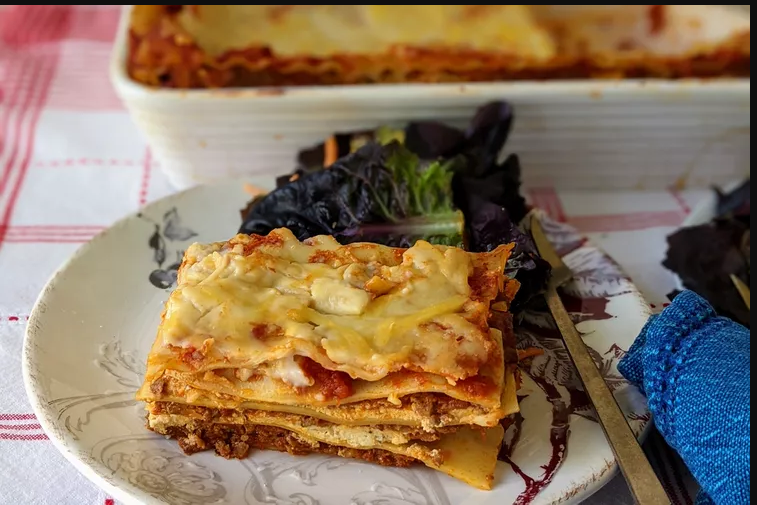

Lasagna

Go back to index
Description
Homemade lasagna isn't as hard to make as it seems. Don't be intimidated by all the layers of delicious Italian flavor — try this homemade lasagna recipe today!
Ingredients
- salt
- pepper
- lasagna
- tomato sauce
- minced meat
- garlic
Steps
- wash the water
- eat the garlic
- throu away the salt
- add pepper to the coffee
- beat the dog
- switch the lights off